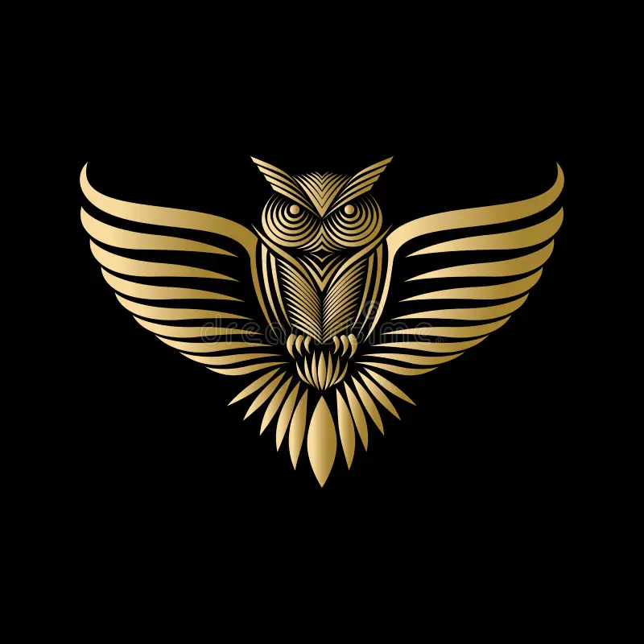
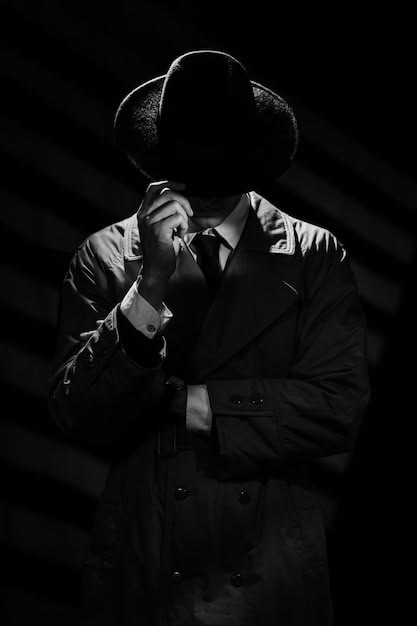
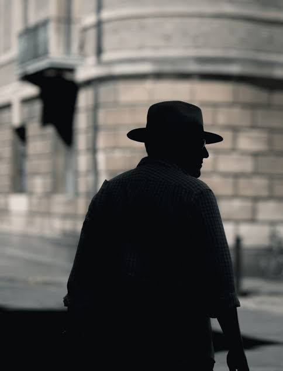
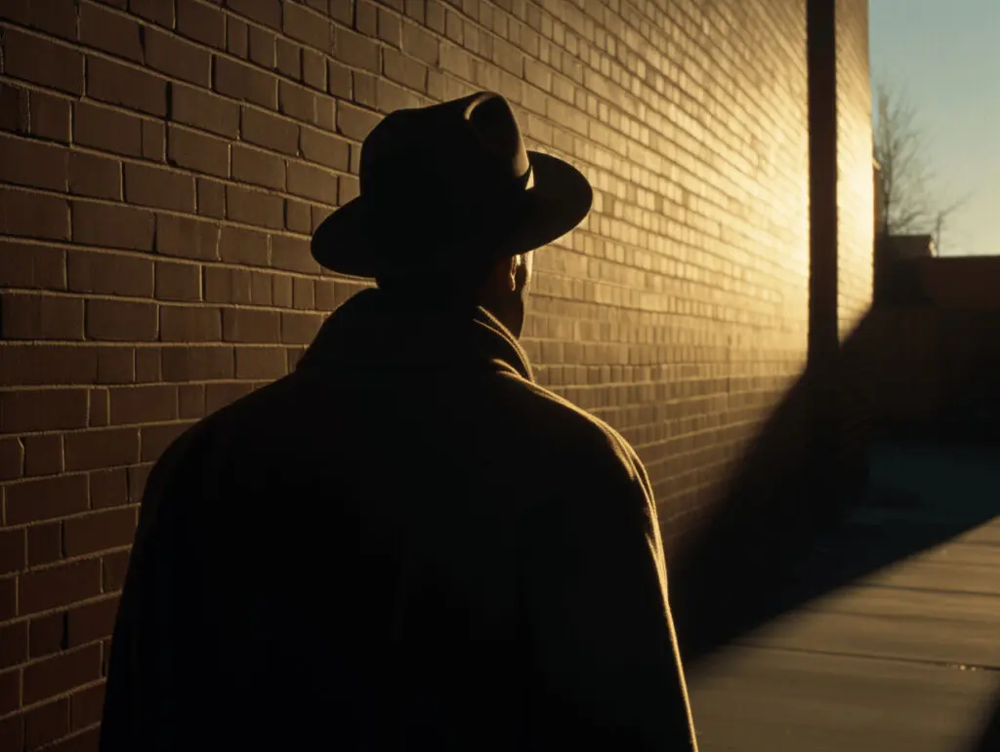

Case
The case of any Monaco is one of the key elements that makes it such an iconic and instantly recognisable watch. The 39mm steel case is finished with brushed bezel and case sides while the lugs and bevels feature polished surfaces.

Movement
Powering this edition is the go-to-choice for the watchmaker – the Calibre Automatic. It’s the same caliber as what you will find across much of the collection, beating at 28,800vph and delivering a full 80 hours of power reserve.
HANDS-ON: Baron Limited Edition is a fumé fantasy
The watch is a classic in every sense of the word. I mean, Steve McQueen famously wore it on the silver screen and if you’re looking for an endorsement from the King of Cool, it doesn’t get much better than that.

Dial
This is where the real show is, with the dial offering a totally new and also “trending” colour green. But as you’d expect from Baron, this isn’t a dull or flat green tone. Far from it, the green is an engaging sunburst colour.